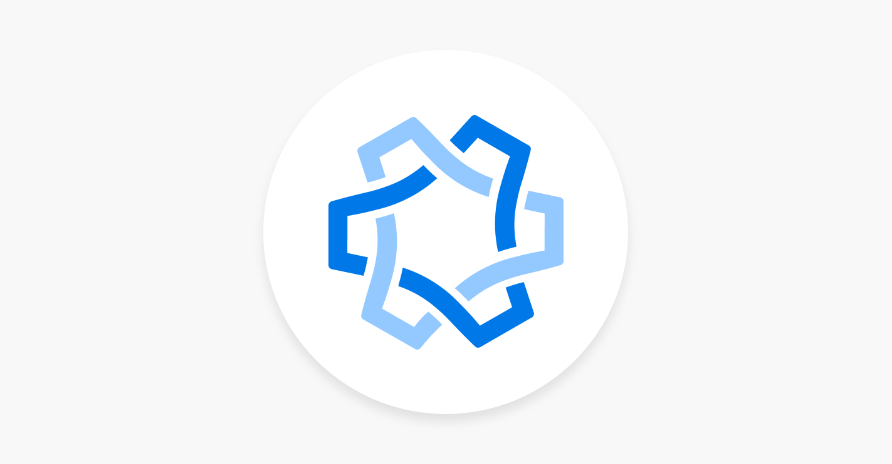
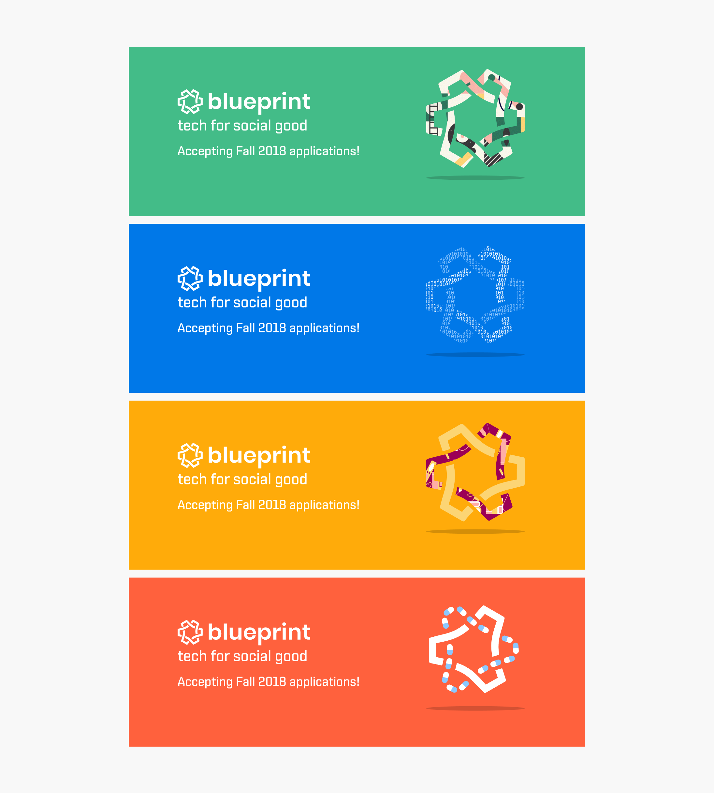
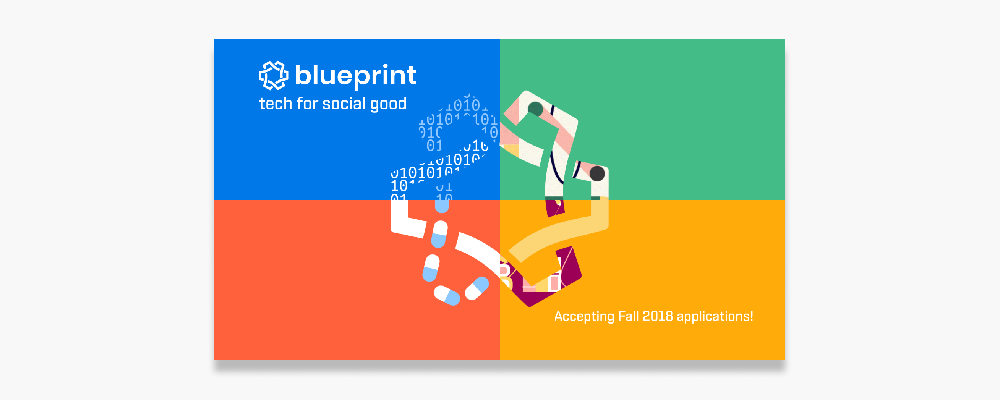
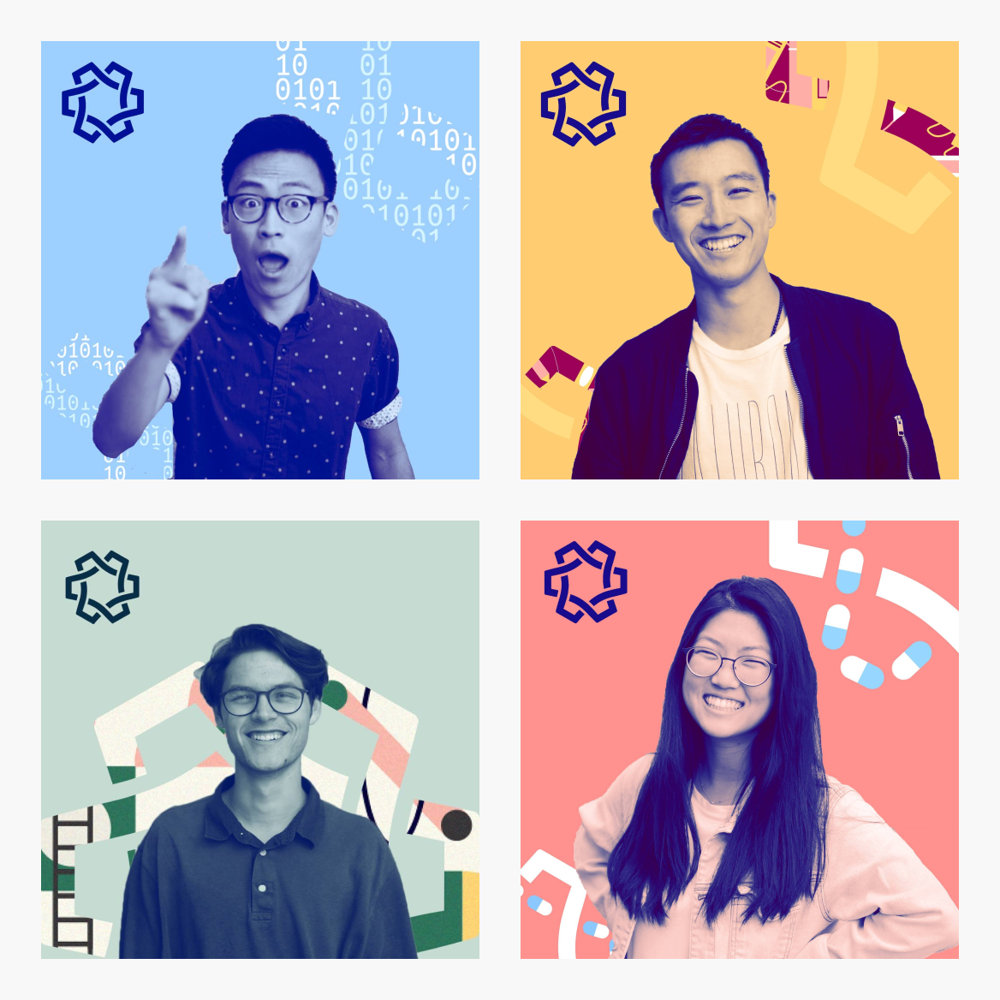

Blueprint is a club at UC Berkeley focused on making technology accessible and useful for those who create communities and promote public welfare. Each year, teams of five students work with non-profit organizations on projects to help them better serve their communities. We've designed and built a crowdfunding application for Berkeley's public schools, a professional development platform for digital literacy in Oakland, and much more!
I, along with Vanessa Ng and Ethan Lee, was responsible for designing the marketing materials used for our Fall 2018 recruitment.
Vanessa Ng (Designer)
Ethan Lee (Designer)
Grant Kalasky (Designer)
When we were brainstorming ideas for the visual design of our new marketing material, we wanted the logo to remain the central focus of our designs. The logo is a distinguishing feature for our club and is easily recognizable by students on the Berkeley campus. Once we agreed on the primary visual element, we had a great foundation to base the rest of our design concepts around.
Blueprint's mission statement is:
To make beautiful engineering accessible and useful for those who create communities and promote public welfare.
Because we are an incredibly mission-focused organization, we wanted to emulate this same sentiment through our branding.
We chose four colors to represent the various nonprofit sectors we've done, and continue to do, work in: Blue (Technology), Yellow (Education), Green (Environment), and Red (Healthcare/Activism). We chose strong, bold colors to help give our marketing materials extra "pop" to stand out from other on-campus organizations.
 We also wanted to showcase the incredible members of Blueprint. Using the visual elements and color palette from our other marketing materials, we created duotone profile pictures for all members of Blueprint. Here are some of them!
